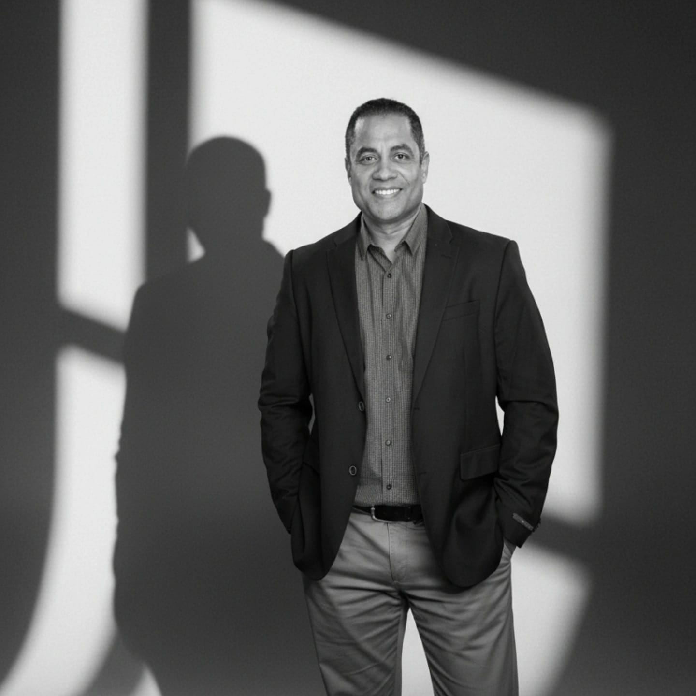

Romer Vera
Ingeniero | Escritor | Coach
Ingeniero | Escritor | Coach
Romer Vera es ingeniero de confiabilidad, coach y escritor, con una trayectoria que conecta la ingeniería, el pensamiento crítico y el desarrollo personal. De origen panameño–venezolano, nació en Venezuela, hijo de padre venezolano y madre panameña, y ha construido su camino profesional integrando disciplina técnica con una visión más amplia sobre cómo las personas piensan, deciden y actúan.
Se formó como ingeniero en Venezuela, donde inició su carrera en el sector de generación de energía, enfrentando entornos operacionales exigentes que marcaron su enfoque práctico hacia la resolución de problemas. Posteriormente, fortaleció su visión estratégica con un MBA en Panamá y amplió su formación en México en el campo del coaching, incorporando herramientas de liderazgo y desarrollo personal.
A lo largo de su carrera ha participado en distintas industrias, con especial énfasis en el sector minero y operaciones industriales complejas, donde ha trabajado en la mejora del desempeño de activos, la reducción de fallas y la toma de decisiones basada en datos. Su enfoque se caracteriza por llevar lo complejo a lo esencial y convertirlo en acciones concretas.
Como autor, ha desarrollado obras que combinan lo técnico con lo humano. En Confiabilidad para Todos y Fallas Cero, presenta de forma clara y directa cómo entender y gestionar la confiabilidad en entornos reales. En paralelo, explora el comportamiento humano y la toma de decisiones en Manda la Vida a la V, inspirado en principios estoicos aplicados a la vida moderna, y Cuando el Aplauso se Vuelve Jaula, donde reflexiona sobre la relación entre identidad y aprobación.
Actualmente, se encuentra profundizando en la escritura como una herramienta de impacto, cursando estudios de escritura creativa en una universidad en España, donde continúa desarrollando una voz que integra experiencia, análisis y narrativa.
Sus libros no buscan solo ser leídos, sino provocar una forma distinta de mirar lo cotidiano: enfocarse en lo que depende de uno, cuestionar lo automático y tomar distancia del ruido externo. Si algo de esto resuena, es probable que encuentres en sus páginas no respuestas fáciles, sino algo más útil: claridad.

